工業MOD
MOD名
Heat And Climate
解説サイト
https://w.atwiki.jp/minecraft/pages/1140.html(Minecraft Japan Wiki)
https://defeatedcrow.jp/modwiki/HeatAndClimate(製作者解説サイト)
MOD名
Immersive Engineering
解説サイト
https://w.atwiki.jp/minecraft/pages/1140.html(Minecraft Japan Wiki)
MOD名
Thermal Expansion/Thermal Foundation/Thermal Dynamics
解説サイト
https://w.atwiki.jp/minecraft/pages/1201.html(Minecraft Japan Wiki)
MOD名
IndustrialCraft²_experimental
アドオン
Advanced Solar Panels
Energy Control
Gravitation Suite
Reactor Tubines Mod for IC2解説サイト
https://w.atwiki.jp/minecraft/pages/1507.html(IndustrialCraft²_experimental)(Minecraft Japan Wiki)
https://w.atwiki.jp/minecraft/pages/431.html#id_93665122(Gravitation Suite)(Minecraft Japan Wiki)
サイト内解説
・Advanced Solar Panels
Advanced Solar Panel |
説明 |
|---|---|
| 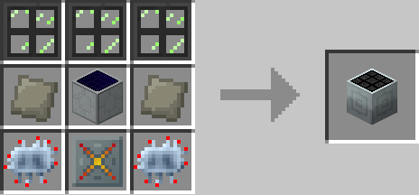 | Irradiant Glass Pane3+Advanced Alloy2+Advanced Circuit2+Irranant Reinforced Plate+Solar Panel 日光下：8EU/t、雨・夜：1EU/t |
Hybrid Solar Panel |
説明 |
| 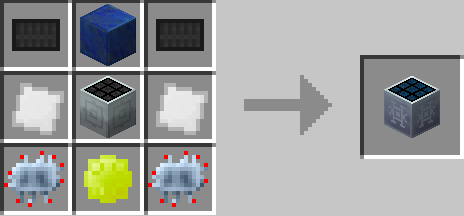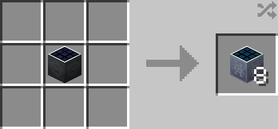 |
Carbon Plate2+Advanced Circuit2+Iridium Plate2+ラピスラズリブロック+Enriched Sunnarium+Advanced Solar Panel 【不定形レシピ】Ultimate Solar Panel：Hybrid Solar Panel8 日光下：64EU/t、雨・夜：8EU/t |
Ultimate Solar Panel |
説明 |
| 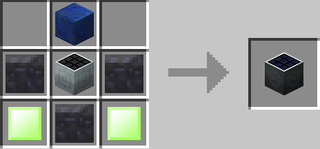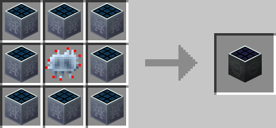 |
Coal Chunk3+Enriched Sunnarium Alloy2+ラピスラズリブロック+Advanced Solar Panel Hybrid Solar Panel8+Advanced Circuit 日光下：512EU/t、雨・夜：64EU/t |
Quantum Solar Panel |
説明 |
| 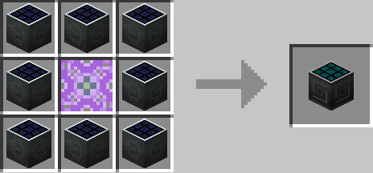 |
Ultimate Solar Panel8+Quantum Core 日光下：4096EU/t、雨・夜：2048EU/t |
Molecular Transformer |
説明 |
| 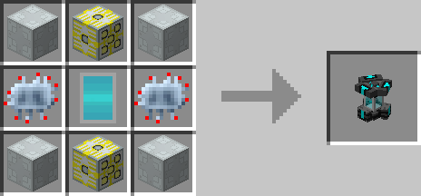 | Advanced Machine Casing4+Advanced Circuit2+EV-Transformer2+MT Core アイテムを大量の電力を消費して変換する機械。 |
Sunnarium Part |
説明 |
| 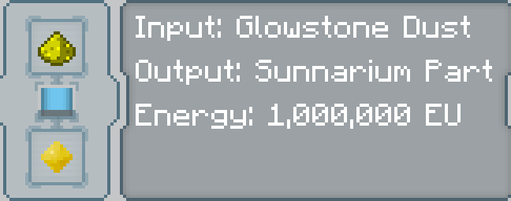 | 【Molecular Transformer】グロウストーンダスト 中間素材。 |
Sunnarium |
説明 |
| 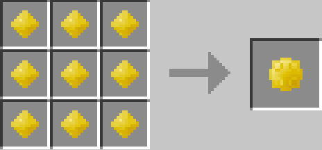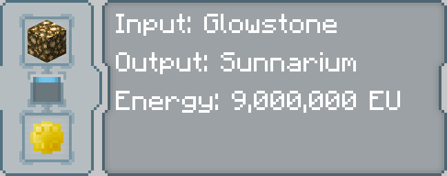 |
Sunnarium Part9 【Molecular Transformer】グロウストーン 中間素材。 |
Sunnarium Alloy |
説明 |
| 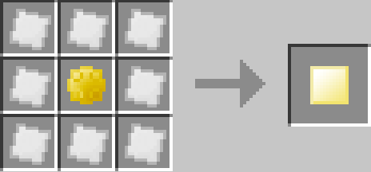 | Iridium Plate8+Sunnarium 中間素材。 |
Irradiant Uranium |
説明 |
| 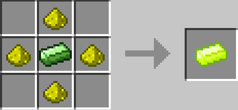 | グロウストーン4+ウラニウムインゴット 中間素材。 |
Enriched Sunnarium |
説明 |
| 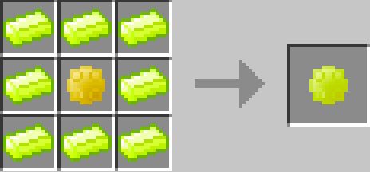 | Irradiant Uranium8+Sunnarium 中間素材。 |
Sunnarium Alloy |
説明 |
| 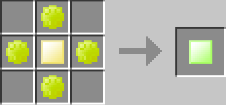 | Enriched Sunnarium4+Sunnarium Alloy 中間素材。 |
Iridium Plate |
説明 |
| 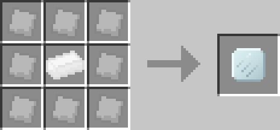 | Iron Plate8+Iridium Ingot 中間素材。 |
Reinforced Iridium Plate |
説明 |
| 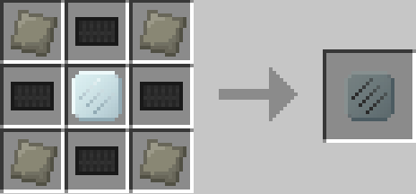 | Carbon Plate4+Advanced Alloy4+Iridium Plate 中間素材。 |
Irradiant Reinforced Iridium Plate |
説明 |
| 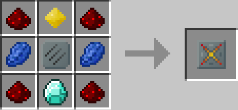 | レッドストーン4+ラピスラズリ2+グロウストーンダスト2+Reinforced Iridium Plate 中間素材。 |
MT Core |
説明 |
| 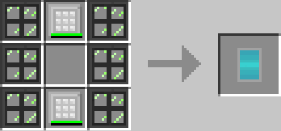 | Irradiant Glass Pane6+Thick Neutron Reflector2 中間素材。 |
・Energy Control
White/Orange Lamp |
説明 | |
|---|---|---|
| 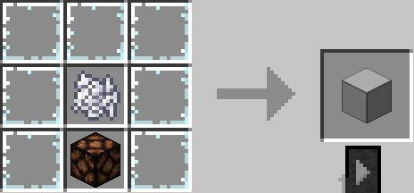 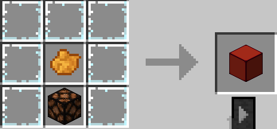 |
板ガラス7+骨粉+レッドストーンランプ：White Lamp 板ガラス7+橙色の染料+レッドストーンランプ：Orange Lamp レッドストーン信号を与えると発光する。 | |
Howler/Industrial Alarm |
説明 | |
| 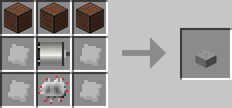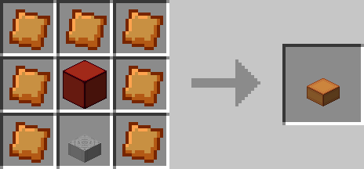 |
音符ブロック3+Iron Plate+Electric Motor+Basic Circuit：Howler Alarm レッドストーン信号を与えるとアラームを流し続ける。3種類のアラームと可聴距離を設定できる。 Bronze Plate7+Orange Lamp+Howler Alarm：Industrial Alarm レッドストーン信号を与えると点滅しながらアラームを流し続ける。 |
|
Thermal Monitor |
説明 | |
| 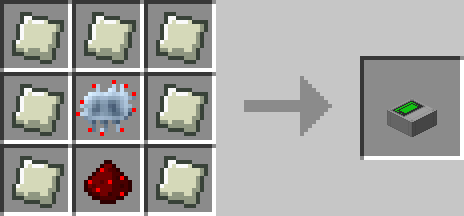 |
Lead Plate7+Advanced Circuit+レッドストーン 右クリックでレッドストーン信号の出力する温度を調節できるGUIが開き、原子炉と隣接させることで原子炉の制御が可能。 高熱過ぎるとThermal Monitorもろとも溶けるので注意。 |
|
Industrial Information Panel/Advanced Information Panel |
説明 | |
| 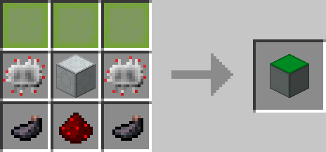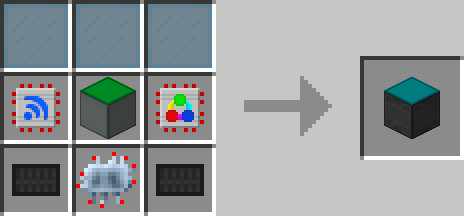 |
黄緑色の色付き板ガラス3+Basic Circuit2+イカスミ2+Basic Machine Casing+レッドストーン：Industarial Information Panel青緑色の色付き板ガラス3+Range Upgrade+Color Upgrade+Touch Screen Upgrade+Carbon Plate+Advanced Circuit+Infomation Panel 後述するCardをGUIに挿入することで情報を表示できる。Advanced Information Panelは3つまでCardを挿入でき、アップグレードが標準搭載されている。 |
|
Information Panel Extender/Advanced Panel Extender |
説明 | |
| 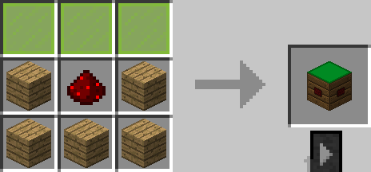 | 黄緑色の色付き板ガラス3+木材5+レッドストーン：Information Panel Extender 青緑色の色付き板ガラス3+Carbon Plate4+Basic Machine Casing+Infromation Panel Extender 対応したInformation Panelに隣接させて設置すると各種Information Panelを拡張できる。 |
|
Energy Sensor Kit |
説明 | |
| 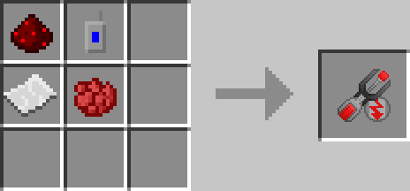 | レッドストーン+Frequency Transmitter+紙+赤色の染料 Batbox, MFE, MFSU, AFSUに対して右クリックするとEnergy Sensor Cardになる。 Information Panelに挿入すると蓄電器の情報を表示する。 |
|
Counter Sensor Kit |
説明 | |
| 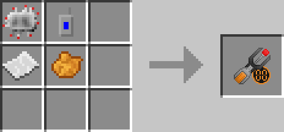 | Basic Circuit+Frequency Transmitter+紙+橙色の染料 Average Couter, Energy Counterに対して右クリックするとCounter Sensor Cardになる。 Information Panelに挿入すると数値を表示する。 |
|
Generator Sensor Kit |
説明 | |
| 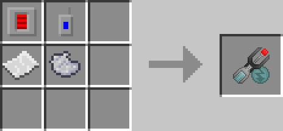 | Energy Storage Upgrade+Frequency Transmitter+紙+薄灰色の染料 IC2発電機に対して右クリックするとGenerator Sensor Cardになる。 Information Panelに挿入すると発電機の情報を表示する。 |
|
Reactor Sensor Kit |
説明 | |
 |
Digital Thermometer+Frequency Transmitter+紙+黄色の染料 Nuclear Reactorに対して右クリックするとReactor Sensor Cardになる。 Information Panelに挿入すると核分裂炉の情報を表示する。 |
|
Remote Toggle Kit |
説明 | |
| 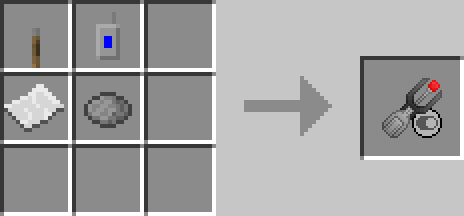 | レバー+Frequency Transmitter+紙+灰色の染料 レバーまたはボタンに対して右クリックするとRemote Toggle Cardになる。 Information Panelに挿入するとレッドストーン信号の有無を表示する。 |
|
Energy Array Card |
説明 | |
| 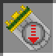 | Energy Sensor Cardを2個以上クラフトするとEnergy Array Cardを作成できる。 Information Panelに複数の蓄電器の情報を表示できる。 |
|
Generator Array Card |
説明 | |
| 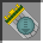 | Generator Sensor Cardを2個以上クラフトするとEnergy Array Cardを作成できる。 Information Panelに複数の発電器の情報を表示できる。 |
|
Text Card |
説明 | |
| 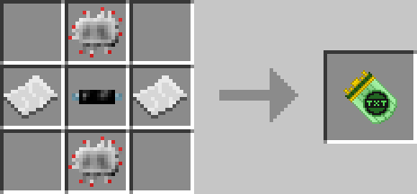 | Basic Circuit2+紙2+Insulated Tin Cable Information Panelにテキストを表示できる。 |
|
Time Card |
説明 | |
| 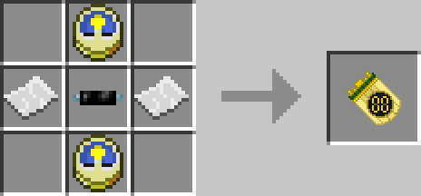 | 時計2+紙2+Insulated Tin Cable Information Panelにマイクラ内の時間を表示する。 |
|
Card Holder |
説明 | |
| 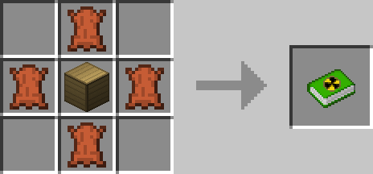 | 革4+Wooden Storage Box 54個までCardを収納できる。 |
|
Average Counter |
説明 | |
| 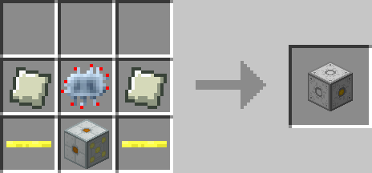 | Lead Plate2+Advanced Circuit+Gold Cable2+MV-Transformer 電力を入力する面が5面、出力する面が1面あり、出力面は中心が黄色になっている。 電力を流すと、流れた電力の平均値を出力し、平均値の計測秒数をGUIで設定できる。 アップグレード無しだと32EU/tしか輸送しないが、Transformer Upgradeを積むことによって輸送量を上げることができる。電圧も上がるので注意。 Average Counter自体はどの電圧にも対応している。 |
|
Energy Counter |
説明 | |
| 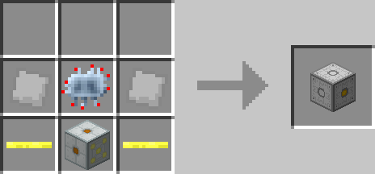 | Iron Plate2+Advanced Circuit+Gold Cable2+MV-Transformer 電力を入力する面が5面、出力する面が1面あり、出力面は中心が黄色になっている。 電力を流すと、流れた電力の総量を出力する。 アップグレード無しだと32EU/tしか輸送しないが、Transformer Upgradeを積むことによって輸送量を上げることができる。電圧も上がるので注意。 Energy Counter自体はどの電圧にも対応している。 |
|
Range Trigger |
説明 | |
| 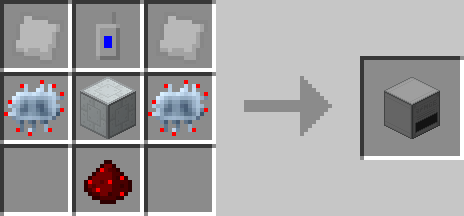 | Iron Plate2+Advanced Circuit2+Frequency Transmitter+Basic Machine Casing+レッドストーン GUIに一部Cardが挿入でき、GUIで設定した数値がCardの数値を上回るとレッドストーン信号を発する。レッドストーン信号は反転が可能。 |
|
Remote Thermal Monitor |
説明 | |
| 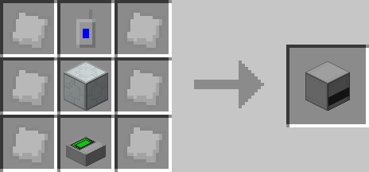 | Iron Plate6+Thermal Monitor+Frequency Transmitter+Basic Machine Casing Reactor Sensor CardをGUIに挿入し、電力を供給することでThermal Monitorと同様の機能を遠隔で行うことができる。 レッドストーン信号は原子炉ではなくRemote Thermal Monitorから発せられるので注意。 中圧以上の電圧を与えると爆発するので注意。 |
|
Range Upgrade |
説明 | |
| 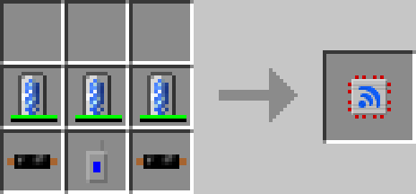 | 10k Coolant Cell3+Insulated Copper Cable2+Frequency Trensmitter 各種機械に挿入でき、検知範囲を拡大できる。 |
|
Color Upgrade |
説明 | |
| 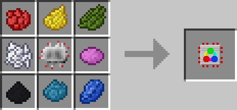 | 10k Coolant Cell3+Insulated Copper Cable2+Frequency Trensmitter Information panelに挿入でき、フォントカラーを変更できる。 |
|
Thermometer |
説明 | |
| 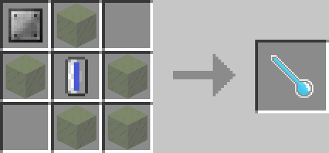 | Iron Plate+ガラス5+Universal FLuid Cell(水) 原子炉に右クリックで原子炉の温度を計れる。 |
|
Digital Thermometer |
説明 | |
| 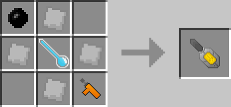 | Rubber+Iron Plate4+Thermometer+Small Power Unit Digital Thermometerの電動版。 |
|
Nano Bow |
説明 | |
| 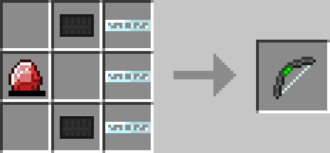 | Energy Crystal+Carbon Plate2+Glass Fibre Cable3 電動式の弓。射撃ダメージはバニラの弓より強力。 |
|
AFB |
説明 | |
| 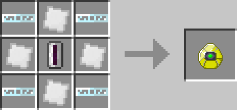 | Iridium Reinforced Plate4+Glass Fibre Cable4
Universal Fluid Cell(UU-Matter) 最上位のバッテリー。1億EUまで蓄電できる。 |
|
AFSU |
説明 | |
| 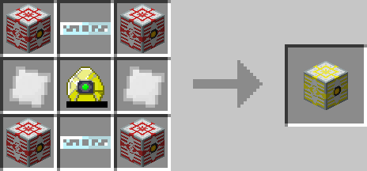 | MFSU4+Iridium Reinforced Plate2+Glass Fibre Cable2+AFB 最上位の蓄電器。40億EUまで蓄電できる。電圧は超高圧。 |
|
AFSU Upgrade kit |
説明 | |
| MFSU Upgrade Kit4+Iridium Reinforced Plate2+Glass Fibre Cable2+AFB MFSUに対して右クリックするとAFSUにアップグレードできる。 |
||
Portable panel |
説明 | |
| Insulated Tin Cable+Frequency Transmitter2+Information Panel Extender+Range Upgrade+Carbon Plate2 GUIにCardを挿入すると各種Cardの情報を確認できる。 |